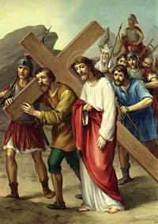

Hmunnganak
Ⅴ

P : Christu Bawipa, nangmah cu kan lo biak ih kan lo lawm asi.
M : Zianghrangah tile na thianghlim thinglamtah in leitlun minung hmuahhmuah cu na tlen zo asi.
P : Bawipa Jesuh cu a tha a cem ih hmailam ah a feh thei nawn lo tikah a ral pawl in Simon Sireneus cu thinglamtah phur bawm dingin a duh na lo cing in an fial asi. Thinglamtah huham in a thinlung a thleng sal ih lungtho zet ten thinglamtah cu a phur sal asi.
Thla kan cam pei :
Aw Bawipa Jesuh, zaangfah ten na thinglamtah in phur ter hram aw. Cuih thinglamtah phurh cu kan lungawinak ah run cang ter aw. Thinglamtah huham in sualnak hmuahhmuah pial thei dingin in zaangfah aw. Na hmin in zonzaih kan tuar tikah Pathian zaangfahnak laksawng asi tiah ruat in lungawi ten kan tuar thei nak dingah thazaang in pe aw tiah zaangfah kan lo dil asi.
Vancung ih a um kan Pa...
Ave Maria...
Pa, Fapa, Thiang Thlarau hnen ah...
P : Bawipa kanmah in zaangfah aw.
M : Kanmah in zaangfah aw.
P : A thi zo mi ih thlarau tla cu Pathian zaangfahnak in nunnuamnak sungah rak cawl tlang thlang seh law.
M : Amen.
5.Hi tluk tiang in riahsia tuar tu, Christu Nu a hmu tu hmuah in, Ṭap lo zo so um thei ding.